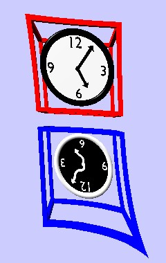

Research

My research involves theoretical studies
of fundamental spacetime symmetries.
Most of my attention has been directed
towards high-precision tests of Lorentz invariance,
the symmetry principle behind special relativity.
Lorentz invariance is the notion that
physics does not depend on the orientation
or velocity of a system.
So, Lorentz symmetry is the symmetry under
rotations (changes in orientation)
and boosts (changes in velocity).
A breakdown of these symmetries, Lorentz violation,
would point to new and interesting physics.
Background information Lorentz and CPT violation can be found
here.
Papers I have written can be found
here.
Animations
Below are some animations illustrating some of the consequences
of Lorentz violation.
Click on the image to view the animation.
All animations are .mpg files.
Most are designed to be played in loop mode.
Rotation in Polarization (part 1):
The Poincare sphere provides an abstract but useful means
of visualizing the effects of birefringence.
In general,
light is elliptically polarized, meaning that the electric-field
vector traces out an ellipse as it propagates.
Each point on the sphere represents a different polarization.
The blue arrow on the left is called the Stokes vector and points to the
spot on the sphere that corresponds to the ellipse in the upper
right corner.
Simple cases include linear polarization,
represented by the equator of the sphere, and circular
polarization, given by the poles.
Birefringence causes the
polarization ellipse to change as light propagates.
On the Poincare sphere,
these changes give a simple rotation of the
Stokes vector about some rotation axis.
The animation shows this effect for a rotation axis (green arrow)
that lies in the equatorial plane.
Rotation in Polarization (part 2):
The rotation in the Stokes vector and corresponding changes in
polarization are illustrated in this animation.
A very distant galaxy produces linearly polarized light.
The light experiences birefringence on its way towards Earth.
As a result, the polarization is different at points along its journey.
When it reaches Earth, it has a different polarization than when it was created.
We can look for this change if we know enough
about the source to determine the initial polarization.
Rotation in Polarization (part 3):
For many sources, there is no way of knowing what the original
polarization was, so we can't look for a direct change.
However, the effect is frequency dependent for most forms of Lorentz violation.
So, assuming that there is little frequency
dependence to begin with, any dependence in the observed
polarization would indicate birefringence and Lorentz violation.
This animation illustrates the expected frequency dependence.
It begins at a low frequency and shows how the
ellipse and polarization angle change as we move to higher
frequencies.
Annual Variations:
This animation shows neutrinos produced in the Sun as one flavor
(yellow) oscillates into another flavor (violet).
In this example, oscillations are caused by a Lorentz-violating background (red arrows).
The result is large oscillations for neutrinos
moving parallel to the field and no oscillations in neutrinos moving
perpendicular to the field.
A solar-neutrino experiment on
Earth then moves through regions of large and small oscillations,
resulting in variations in the observed neutrino flux.
A signature of this effect is then an annual variation in the number
of neutrinos of each flavor reaching Earth.
Tensor Spherical Harmonic
Below are some graphical representation of the E-parity and B-parity
components of some spin-weighted spherical harmonics up to j=2.
Spin-weighted spherical harmonics are a form of tensor spherical harmonics.
Tensor objects (e.g. scalars, vectors, matrices) can be written as sums of
spin-weighted spherical harmonics in the same way a scalar function can be
written in terms of the usual spherical harmonics.
For more discussion, see
Phys. Rev. D 80 015020 (2009),
where these harmonics are used to characterize all possible violations
of Lorentz invariance in electromagnetism that are consistent with
the usual U(1) gauge invariance.
spin weight = 0:
These are just the usual spherical harmonics.
The size of the circles on the
sphere below represent the absolute value of the harmonics at different
points on the sphere.
Solid circles indicate positive values, while open
circles represent negative values.
Labels are (spin weight)(parity)(total angular momentum index j)(z-component index m).
Click on the image to see a large version.
spin weight = 1:
These are vector harmonics.
The arrows on the spheres represent the
magnitude and direction of the corresponding vector field for each
component.
spin weight = 2:
This case corresponds to symmetric traceless 2-tensors.
Any tensor of this type can be represented by two orthogonal vectors associated with the
primary axes of the tensor.
The lines indicate the magnitude and direction
of these axes, but are unoriented because this representation does not
depend on the orientation of the two vectors.
{kind=link}
{kind=link}
{kind=link}
{kind=link}
{kind=link}
{kind=link}
{kind=link}
{kind=link}
{kind=link}
{kind=link}
{kind=link}
{kind=link}
{kind=link}
{kind=link}
{kind=link}
{kind=link}
{kind=link}
{kind=link}
{kind=link}
{kind=link}
{kind=link}
{kind=link}